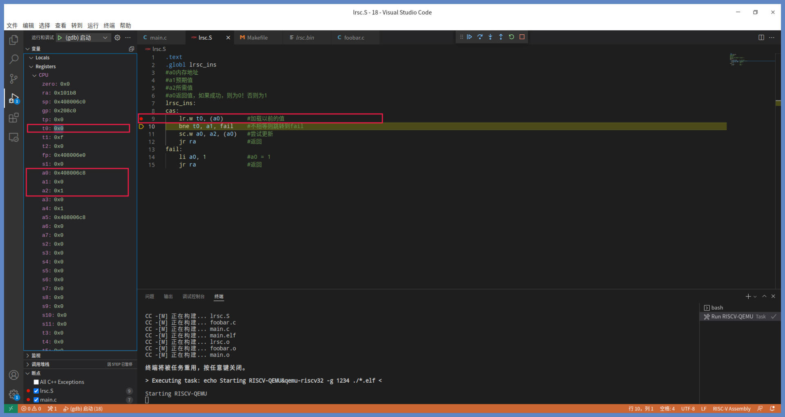
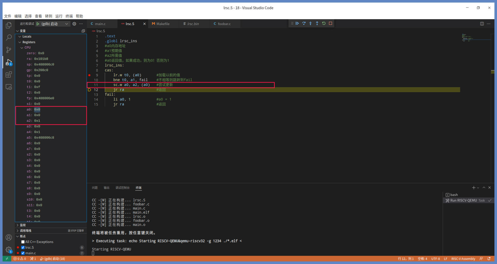
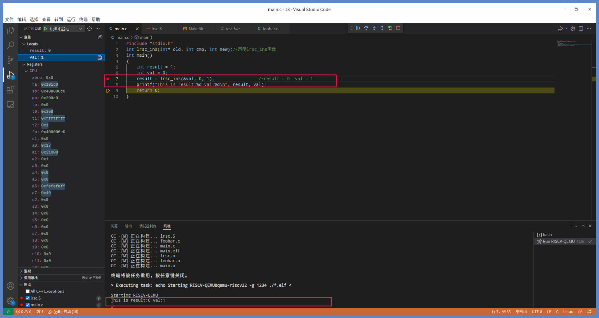
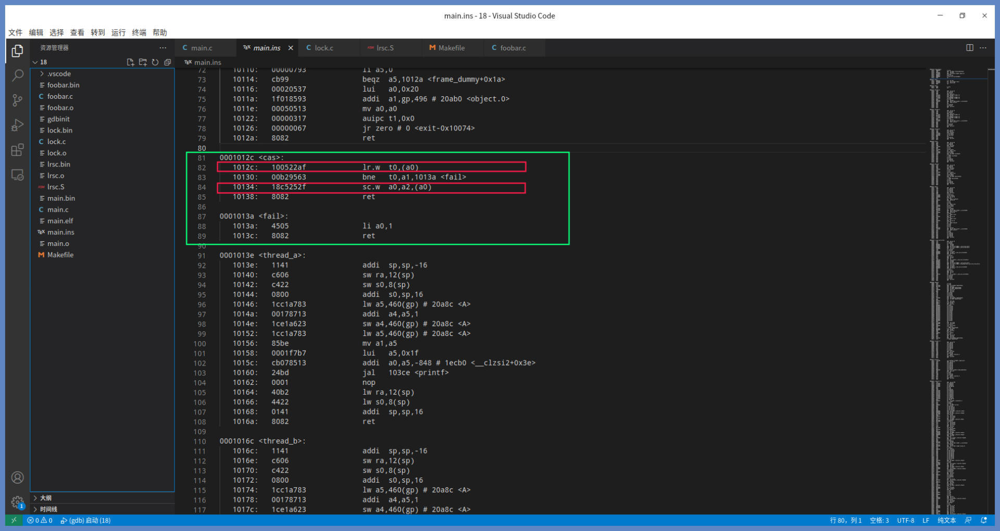
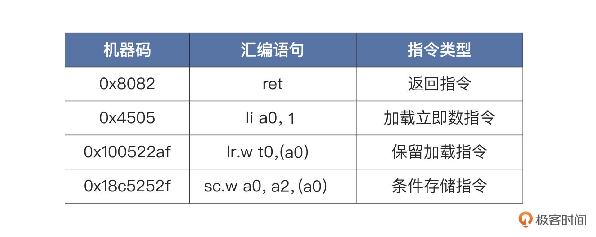
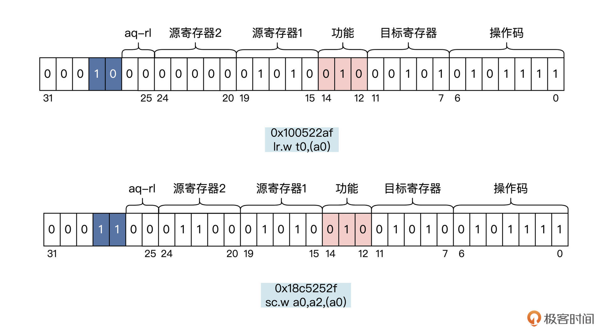
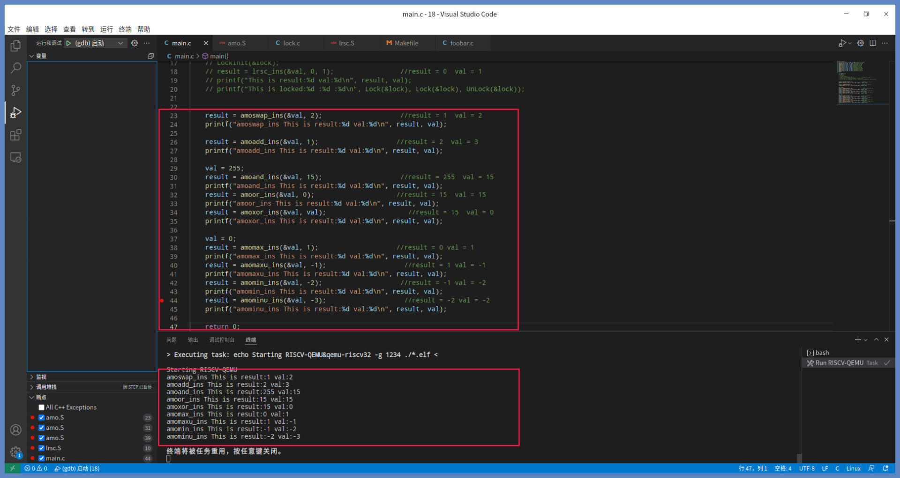
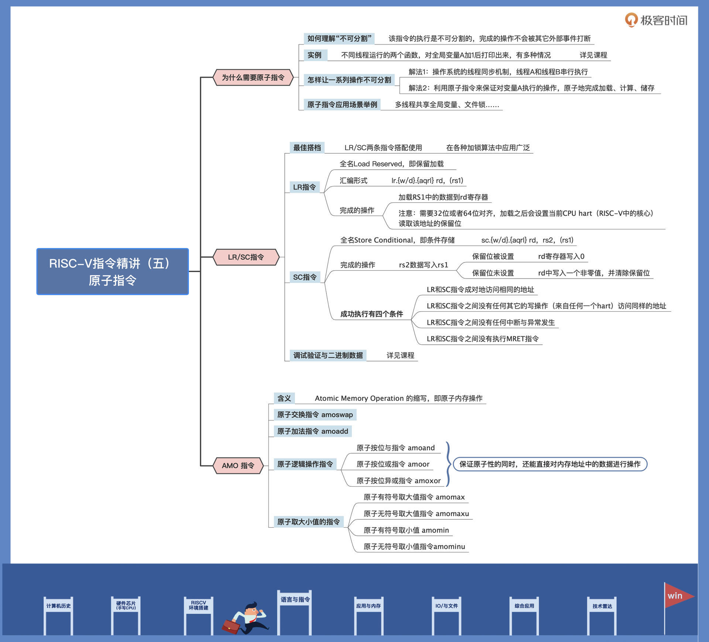

- 00 开篇词 练好基本功，优秀工程师成长第一步.md.html
- 01 CISC & RISC：从何而来，何至于此.md.html
- 02 RISC特性与发展：RISC-V凭什么成为“半导体行业的Linux”？.md.html
- 03 硬件语言筑基（一）：从硬件语言开启手写CPU之旅.md.html
- 04 硬件语言筑基（二）_ 代码是怎么生成具体电路的？.md.html
- 05 指令架构：RISC-V在CPU设计上到底有哪些优势？.md.html
- 06 手写CPU（一）：迷你CPU架构设计与取指令实现.md.html
- 07 手写CPU（二）：如何实现指令译码模块？.md.html
- 08 手写CPU（三）：如何实现指令执行模块？.md.html
- 09 手写CPU（四）：如何实现CPU流水线的访存阶段？.md.html
- 10 手写CPU（五）：CPU流水线的写回模块如何实现？.md.html
- 11 手写CPU（六）：如何让我们的CPU跑起来？.md.html
- 12 QEMU：支持RISC-V的QEMU如何构建？.md.html
- 13 小试牛刀：跑通RISC-V平台的Hello World程序.md.html
- 14 走进C语言：高级语言怎样抽象执行逻辑？.md.html
- 15 C与汇编：揭秘C语言编译器的“搬砖”日常.md.html
- 16 RISC-V指令精讲（一）：算术指令实现与调试.md.html
- 17 RISC-V指令精讲（二）：算术指令实现与调试.md.html
- 18 RISC-V指令精讲（三）：跳转指令实现与调试.md.html
- 19 RISC-V指令精讲（四）：跳转指令实现与调试.md.html
- 20 RISC-V指令精讲（五）：原子指令实现与调试.md.html
- 21 RISC-V指令精讲（六）：加载指令实现与调试.md.html
- 22 RISC-V指令精讲（七）：访存指令实现与调试.md.html
- 23 内存地址空间：程序中地址的三种产生方式.md.html
- 24 虚实结合：虚拟内存和物理内存.md.html
- 25 堆&栈：堆与栈的区别和应用.md.html
- 26 延迟分配：提高内存利用率的三种机制.md.html
- 27 应用内存管理：Linux的应用与内存管理.md.html
- 28 进程调度：应用为什么能并行执行？.md.html
- 29 应用间通信（一）：详解Linux进程IPC.md.html
- 30 应用间通信（二）：详解Linux进程IPC.md.html
- 31 外设通信：IO Cache与IO调度.md.html
- 32 IO管理：Linux如何管理多个外设？.md.html
- 33 lotop与lostat命令：聊聊命令背后的故事与工作原理.md.html
- 34 文件仓库：初识文件与文件系统.md.html
- 35 Linux文件系统（一）：Linux如何存放文件？.md.html
- 36 Linux文件系统（二）：Linux如何存放文件？.md.html
- 37 浏览器原理（一）：浏览器为什么要用多进程模型？.md.html
- 38 浏览器原理（二）：浏览器进程通信与网络渲染详解.md.html
- 39 源码解读：V8 执行 JS 代码的全过程.md.html
- 40 内功心法（一）：内核和后端通用的设计思想有哪些？.md.html
- 41 内功心法（二）：内核和后端通用的设计思想有哪些？.md.html
- 42 性能调优：性能调优工具eBPF和调优方法.md.html
- 先睹为快：迷你CPU项目效果演示.md.html
- 加餐01 云计算基础：自己动手搭建一款IAAS虚拟化平台.md.html
- 加餐02 学习攻略（一）：大数据&云计算，究竟怎么学？.md.html
- 加餐03 学习攻略（二）：大数据&云计算，究竟怎么学？.md.html
- 加餐04 谈谈容器云与和CaaS平台.md.html
- 加餐05 分布式微服务与智能SaaS.md.html
- 国庆策划01 知识挑战赛：检验一下学习成果吧！.md.html
- 国庆策划02 来自课代表的学习锦囊.md.html
- 国庆策划03 揭秘代码优化操作和栈保护机制.md.html
- 温故知新 思考题参考答案（一）.md.html
- 用户故事 我是怎样学习Verilog的？.md.html
- 结束语 心若有所向往，何惧道阻且长.md.html
- 捐赠
20 RISC-V指令精讲（五）：原子指令实现与调试
你好，我是LMOS。
通过前面的课程，我们学过了RISC-V的各种跳转指令以及这些指令的各种变形，并且了解了它们的机器编码。
今天，我们开始学习RISC-V下的原子指令，原子指令是RISC-V的指令扩展，命名为 ‘A’。这个扩展指令中包含两部分，分别是LR/SC指令和AMO指令。
我们先搞明白为什么需要原子指令，什么情况用得上它们。再分别学习和对比LR/SC指令与AMO指令，另外，我还会让你知道这些指令各自的使用场景是什么。
课程代码你可以从这里下载。话不多说，让我们直接开始吧。
为什么需要原子指令
你对学生时代上的物理课还有什么印象么？那时候我们就接触过“原子”这个概念了。“原子”是物质的最小组成，即原子是不可分割的。虽然到现在科学家已经发现在原子内部有更小的成分，但是在广义上原子仍然保持“不可分割”的语义。
那么在芯片中的原子指令是什么呢？它延续了“不可分割”这个含义，表示该指令的执行是不可分割的，完成的操作不会被其它外部事件打断。
我们结合一段代码，来了解原子指令的具体作用和使用场景。
//全局变量A
int A = 0;
//线程A执行的函数
void thread_a()
{
A++;
printf("ThreadA A is:%d\n"，A);
return;
}
//线程B执行的函数
void thread_b()
{
A++;
printf("ThreadB A is:%d\n"，A);
return;
}
以上两个函数，分别由不同的线程运行，都是对全局变量A加1后打印出来。让我们暂停一下想想看，你认为程序的打印结果是什么？
也许你的判断是两种情况，即输出A值1、 2；A值：2、2。但你把代码跑一下试试，就会发现结果出乎意料。除了前面两种情况，还多了一个可能：A值：1、1。这就很奇怪了，为什么出现这种情况呢？
原因便是A++不是原子指令实现的不可分割操作，它可以转化为后面这样的CPU指令形式。
load reg，A #加载A变量到寄存器
Add reg，1 #对寄存器+1
store A，reg #储存寄存器到A变量
我们已经看到了，A++被转换成了三条指令，有可能线程A执行了上面第一行指令，线程B也执行了上面第一行指令，这时就会出现线程A、B都输出1的情况。其本质原因是，这三条指令是独立、可分割的。
解决这个问题的方案不止一种。我们可以使用操作系统的线程同步机制，让线程A和线程B串行执行，即thread_a函数执行完成了，再执行thread_b函数。另一种方案是使用原子指令，利用原子指令来保证对变量A执行的操作，也就是加载、计算、储存这三步是不可分割的，即一条指令能原子地完成这三大步骤。
现实中，小到多个线程共享全局变量，大到多个程序访问同一个文件，都需要保证数据的一致性。对于变量可以使用原子指令，而文件可以利用原子指令实现文件锁，来同步各个进程对文件的读写。这就是原子指令存在的价值。
为了实现这些原子操作，一款CPU在设计实现时，就要考虑提供完成这些功能的指令，RISC-V也不例外，原子指令是现代CPU中不可或缺的一种指令，除非你的CPU是单个核心，没有cache，且不运行操作系统。显然，RISC-V架构的CPU，不是那种类型的CPU。
搞清楚了为什么需要原子指令，我们接下来就去看看，RISC-V究竟提供了哪些原子指令？
LR/SC指令
首先RISC-V提供了LR/SC指令。这虽然是两条指令，但却是一对好“搭档”，它们需要配合才能实现原子操作，缺一不可。看到后面，你就会知道这是为什么了，我们先从这两条指令用在哪里说起。
在原子的比较并交换操作中，常常会用到LR/SC指令，这个操作在各种加锁算法中应用广泛。我们先来看看这两条指令各自执行了什么操作。
LR指令是个缩写，全名是Load Reserved，即保留加载；而SC指令的缩写展开是Store Conditional，即条件存储。
我们先来看看它们在汇编代码中的书写形式，如下所示：
lr.{w/d}.{aqrl} rd，(rs1)
#lr是保留加载指令
#{可选内容}W（32位）、D（64位）
#aqrl为内存顺序，一般使用默认的
#rd为目标寄存器
#rs1为源寄存器1
sc.{w/d}.{aqrl} rd，rs2，(rs1)
#sc是条件储存指令
#{可选内容}W（32位）、D（64位）
#aqrl为内存顺序，一般使用默认的
#rd为目标寄存器
#rs1为源寄存器1
#rs2为源寄存器2
上述代码中，rd、rs1、rs2可以是任何通用寄存器。“{}“中的内容不是必须填写的，汇编器能根据当前的运行环境自动设置。
LR指令和SC指令完成的操作，用伪代码可以这样描述：
//lr指令
rd = [rs1]
reservation_set(cur_hart)
//sc指令
if (is_reserved(rs1)) {
*rs1 = rs2
rd = 0
} else
rd = 1
clean_reservation_set(cur_hart)
观察上述伪代码，我们先看看LR指令做了什么：rs1寄存器的数据就是内存地址，指定了LR指令从哪里读取数据。LR会从该地址上加载一个32位或者64位的数据，存放到rd寄存器中。这个地址需要32位或者64位对齐，加载之后会设置当前CPU hart（RISC-V中的核心）读取该地址的保留位。
而SC指令则是先判断rs1中对应地址里的保留位（reservation set）有没有被设置。如果被设置了，则把rs2的数据写入rs1为地址上的内存中，并在rd中写入0；否则将向rd中写入一个非零值，这个值并不一定是1，最后清除当前对应CPU hart（RISC-V中的核心）在该地址上设置的保留位。
从上面的描述，我们发现，SC指令不一定执行成功，只有满足后面这四个条件，它才能执行成功：
- LR和SC指令成对地访问相同的地址。-
- LR和SC指令之间没有任何其它的写操作（来自任何一个hart）访问同样的地址。-
- LR和SC指令之间没有任何中断与异常发生。-
- LR和SC指令之间没有执行MRET指令。
而这些条件正是LR/SC指令保持原子性的关键所在。
下面我们一起写代码验证一下。为了方便调试，我们的代码组织结构还是从写一个main.c文件开始，然后在其中写上main函数，因为这是链接器所需要的。接着我们写一个lrsc.S文件，并在里面用汇编写上lrsc_ins函数，这些操作在前面课程中我们已经反复做过了。
代码如下所示：
.globl lrsc_ins
#a0内存地址
#a1预期值
#a2所需值
#a0返回值，如果成功，则为0！否则为1
lrsc_ins:
cas:
lr.w t0，(a0) #加载以前的值
bne t0，a1，fail #不相等则跳转到fail
sc.w a0，a2，(a0) #尝试更新
jr ra #返回
fail:
li a0，1 #a0 = 1
jr ra #返回
这样，lrsc_ins函数就写好了。
我结合上面的代码再带你理解一下：这个函数首先通过LR指令把a0中的数据（也就是地址信息）加载到t0中，如果t0和a1不相等，则跳转到fail处，将a0置1并返回；否则继续顺序执行，通过SC指令将a2的数据写入到a0为地址的内存中，写入成功则将a0置0，不成功则置为非零。SC指令执行成功与否，要看是否满足上面那4个条件，最后返回。
我们在main.c文件中声明一下这两个函数并调用它，再用VSCode打开工程目录，按下“F5”键调试一下，如下所示：

上图是执行“lr.w t0，(a0)”指令后的状态。下一步我们将执行bne比较指令，继续做两步单步调试，目的是执行SC指令，如下所示：

上图是执行“sc.w a0，a2，(a0)”指令后的状态。由于SC指令执行时满足上述四大条件，所以SC会把a2的内容写入a0为地址的内存中，并将a0置0，最后返回到main函数中，如下所示：

上图描述的过程是，main函数调用lrsc_ins函数后，然后调用printf输出返回的结果，在终端中的输出为result:0，val:1。这个结果在我们的预料之中，也验证了LR/SC指令正如我们前面所描述的那样。
通过这种LR/SC指令的组合，确实可以实现原子的比较并交换的操作，在计算机行业中也称为CAS指令。这种CAS指令是实现系统中各种同步锁的基础设施，这也是为什么我在写代码时，同时使用lrsc_ins和cas两个标号的用意。
我们再看一个例子加深印象，代码如下所示：
int cas(int* lock, int cmp, int lockval); // 声明cas函数
int lock = 0;
//初始化锁
void LockInit(int* lock)
{
*lock = 0;
return;
}
//加锁
int Lock(int* lock)
{
int status;
status = cas(lock, 0, 1);
if(status == 0)
{
return 1;//加锁成功
}
return 0; //加锁失败
}
//解锁
int UnLock(int* lock)
{
int status;
status = cas(lock, 1, 0);
if(status == 0)
{
return 1;//解锁成功
}
return 0; //解锁失败
}
上述代码是一个加解锁的例子，返回1表示加、解锁操作成功；返回0表示加、解锁操作失败；lock为0表示解锁状态，为1则表示上锁状态。加、解锁操作最关键的点在于这个操作是原子的，不能被打断，而这正是LR/SC指令的作用所在。
经过刚刚的调试，LR/SC指令的功能细节我们已经心中有数了。现在我们继续一起看看它的二进制数据。
打开终端，切换到工程目录下，输入命令：riscv64-unknown-elf-objdump -d ./main.elf > ./main.ins，就会得到main.elf的反汇编数据文件main.ins。我们打开这个文件，就会看到它们的二进制数据，如下所示：

我们一起看看上图中的反汇编代码，这里编译器为了节约内存，使用了一些压缩指令，也就是RISC-V的C类扩展指令。
比如ret的机器码是0x8082，li a0，1的机器码为0x4505，它们只占用16位编码，即二字节。
上图机器码与汇编语句的对应关系如下表所示：

让我们继续一起来拆分一下LR、SC指令的各位段的数据，看看它是如何编码的。对照后面的示意图你更容易理解：

LR/SC指令的操作码和功能码都是相同的，它们俩是靠27位~31位来区分的。其它的寄存器位段在前面的课程中已经介绍得相当详细了，而aq-rl位段是用来设置计算储存顺序的，使用默认的就行，这里我们就不深入研究了。
AMO指令
前面，我们通过例子演示了LR/SC指令如何实现锁的功能。基于此，我们给操作对象加锁，就能执行更多逻辑上的“原子”操作。但这方式也存在问题，实现起来很复杂，对于单体变量，使用这种方式代价很大。
因此AMO类的指令应运而生。这也是一类原子指令，它们相比LR/SC指令用起来更方便。因为也属于原子指令，所以每个指令完成的操作同样是不可分割，不能被外部事件打断的。
AMO 是 Atomic Memory Operation 的缩写，即原子内存操作。AMO 指令又分为几类，分别是原子交换指令、原子加法指令、原子逻辑指令和原子取大小值指令。
大部分调试指令的操作，我们都在前几节课里学过了，这里我们不再深入调试，只是用这些指令来写一些可执行的代码，方便我们了解其原理就行了。调试过程和前面的一样。你自己有兴趣可以自己动手调试。
首先我们来看看原子交换指令，它能执行寄存器和内存中的数据交换，并保证该操作的原子性，其汇编代码形式如下所示：
amoswap.{w/d}.{aqrl} rd,rs2,(rs1)
#amoswap是原子交换指令
#{可选内容}W（32位）、D（64位）
#aqrl为内存顺序，一般使用默认的
#rd为目标寄存器
#rs1为源寄存器1
#rs2为源寄存器2
上述代码中rd、rs1、rs2可以是任何通用寄存器。“{}“中的可以不必填写，汇编器能根据当前的运行环境自动设置。
我们用伪代码来描述一下amoswap指令完成的操作，你会看得更清楚。
//amoswap
rd = *rs1
*rs1 = rs2
观察上述伪代码，amoswap指令是把rs1中的数据当成内存地址，加载了该地址上一个32位或者64位的数据到rd寄存器中。然后把rs2中的数据，写入到rs1指向的内存单元中，实现rs2与内存单元的数据交换，该地址需要32位或者64位对齐。这两步操作是原子的、不可分割的。
下面，我们在工程目录中建立一个amo.S文件，并在其中用汇编写上amoswap_ins函数，代码如下所示：
.globl amoswap_ins
#a0内存地址
#a1将要交换的值
#a0返回值
amoswap_ins:
amoswap.w a0, a1, (a0) #原子交换a0=[a0]=a1
jr ra #返回
我们直接看代码里的amoswap_ins函数，其中amoswap指令的作用是，把a0地址处的内存值读取到a0中，然后把a1的值写入a0中的地址处的内存中，完成了原子交换操作。你可以自己进入工程调试一下。
接着我们来看看原子加法指令，这类指令能把寄存器和内存中的数据相加，并把相加结果写到内存里，然后返回内存原有的值。原子加法指令的汇编代码形式如下所示。
amoadd.{w/d}.{aqrl} rd,rs2,(rs1)
#amoadd是原子加法指令
#{可选内容}W（32位）、D（64位）
#aqrl为内存顺序，一般使用默认的
#rd为目标寄存器
#rs1为源寄存器1
#rs2为源寄存器2
上述代码中除了指令符和原子交换指令不同，其它都是一样的，amoadd指令完成的操作用伪代码描述如下：
//amoadd
rd = *rs1
*rs1 = *rs1 + rs2
我们观察一下amoadd指令都做了什么。它把rs1中的数据当成了内存地址，先把该地址上一个32位或者64位的数据，读到rd寄存器中。然后把rs2的数据与rs1指向的内存单元里的数据相加，结果写入到该地址的内存单元中，该地址仍需要32位或者64位对齐。这两步操作是不可分割的。
下面我们在amo.S文件中用汇编写上amoadd_ins函数，代码如下：
.globl amoadd_ins
#a0内存地址
#a1相加的值
#a0返回值
amoadd_ins:
amoadd.w a0, a1, (a0) #原子相加a0=[a0] [a0]=[a0] + a1
jr ra #返回
上述代码中，amoadd_ins函数中的amoadd指令，把a0中的地址处的内存值读取到a0中，然后把a1的值与a0中的地址处的内存中的数据相加，结果写入该地址的内存单元中，这操作是原子执行的，完成了原子加法操作。指令的调试你可以课后自己练一练。
我们继续研究原子逻辑操作指令，一共有三条，分别是原子与、原子或、原子异或。它们和之前的逻辑指令功能相同，只不过它们在保证原子性的同时，还能直接对内存地址中的数据进行操作。
原子逻辑操作指令的汇编代码形式如下所示：
amoand.{w/d}.{aqrl} rd,rs2,(rs1)
amoor.{w/d}.{aqrl} rd,rs2,(rs1)
amoxor.{w/d}.{aqrl} rd,rs2,(rs1)
#amoand是原子按位与指令
#amoor是原子按位或指令
#amoxor是原子按位异或指令
#{可选内容}W（32位）、D（64位）
#aqrl为内存顺序，一般使用默认的
#rd为目标寄存器
#rs1为源寄存器1
#rs2为源寄存器2
上述代码中三条指令，除了指令符不同，其它是一样的，rd、rs1、rs2可以是任何通用寄存器。“{}“中的可以不必填写，汇编器能根据当前的运行环境自动设置。
amoand、amoor、amoxor三条指令各自完成的操作，我们分别用伪代码描述一下，如下所示：
//amoand
rd = *rs1
*rs1 = *rs1 & rs2
//amoor
rd = *rs1
*rs1 = *rs1 | rs2
//amoxor
rd = *rs1
*rs1 = *rs1 ^ rs2
上面的伪代码中，都是把rs1中数据当成地址，把该地址内存单元中的数据读取到rd中，然后进行相应的按位与、或、异或操作，最后把结果写入该地址的内存单元中。这些操作是不可分割的，且地址必须对齐到处理器位宽。
下面我们在amo.S文件中用汇编写上三个函数，代码如下：
.globl amoand_ins
#a0内存地址
#a1相与的值
#a0返回值
amoand_ins:
amoand.w a0, a1, (a0) #原子相与a0 = [a0] [a0] = [a0] & a1
jr ra #返回
.globl amoor_ins
#a0内存地址
#a1相或的值
#a0返回值
amoor_ins:
amoor.w a0, a1, (a0) #原子相或a0 = [a0] [a0] = [a0] | a1
jr ra #返回
.globl amoxor_ins
#a0内存地址
#a1相异或的值
#a0返回值
amoxor_ins:
amoxor.w a0, a1, (a0) #原子相异或a0 = [a0] [a0] = [a0] ^ a1
jr ra #返回
这段代码中，amoand_ins、amoor_ins、amoxor_ins三个函数，都是把a0中数据作为地址，把该地址内存单元中的值读取到a0中。然后，再对a1的值与该地址内存单元中的数据进行与、或、异或操作，把结果写入该地址的内存单元中，这样就完成了原子与、或、异或操作。调试的思路和前面指令一样，我就不重复了。
最后，我们来看看原子取大小值的指令，它包括无符号数和有符号数版本，一共是四条指令，分别是：原子有符号取大值指令、原子无符号取大值指令、原子有符号取小值指令、原子无符号取小值指令。
汇编代码形式如下所示：
amomax.{w/d}.{aqrl} rd,rs2,(rs1)
amomaxu.{w/d}.{aqrl} rd,rs2,(rs1)
amomin.{w/d}.{aqrl} rd,rs2,(rs1)
amominu.{w/d}.{aqrl} rd,rs2,(rs1)
#amomax是原子有符号取大值指令
#amomaxu是原子无符号取大值指令
#amomin是原子有符号取小值指令
#amominu是原子无符号取小值指令
#{可选内容}W（32位）、D（64位）
#aqrl为内存顺序，一般使用默认的
#rd为目标寄存器
#rs1为源寄存器1
#rs2为源寄存器2
上述代码中四条指令，除了指令符不同，其它内容是一样的。
我们用伪代码来描述一下amomax、amomaxu、amomin、amominu四条指令各自完成的操作，形式如下：
max(a,b)
{
if(a > b)
return a;
else
return b;
}
min(a,b)
{
if(a < b)
return a;
else
return b;
}
exts(a)
{
return 扩展符号(a)
}
//amomax
rd = *rs1
*rs1 = max(exts(*rs1),exts(rs2))
//amomaxu
rd = *rs1
*rs1 = *rs1 = max(*rs1,rs2)
//amomin
rd = *rs1
*rs1 = min(exts(*rs1),exts(rs2))
//amominu
rd = *rs1
*rs1 = *rs1 = min(*rs1,rs2)
观察上面的伪代码，我们可以看到max函数可以返回两数之间的大数、min函数可以返回两数之间的小数，exts函数负责处理数据的符号。
我们对比学习这几条指令，理解起来更容易。上面的amomax、amomaxu指令都是把rs1中数据当成地址，把该地址内存单元中的数据读取到rd中，然后与rs2进行比较。最后，把两者之间大的那个数值写入该地址的内存单元中，区别是比较时的数据有无符号。
而amomin、amominu指令则是把rs1中数据当成地址，把该地址内存单元中的数据读取到rd中，然后与rs2进行比较，最后把两者之间小的数值写入该地址的内存单元中。这两个指令的区别同样是比较时的数据有无符号。
下面我们在amo.S文件中用汇编写上四个函数，代码如下所示：
.globl amomax_ins
#a0内存地址
#a1相比的值
#a0返回值
amomax_ins:
amomax.w a0, a1, (a0) #原子相与a0 = [a0] [a0] = max([a0] , a1)
jr ra #返回
.globl amomaxu_ins
#a0内存地址
#a1相比的值
#a0返回值
amomaxu_ins:
amomaxu.w a0, a1, (a0) #原子相与a0 = [a0] [a0] = maxu([a0] , a1)
jr ra #返回
.globl amomin_ins
#a0内存地址
#a1相比的值
#a0返回值
amomin_ins:
amomin.w a0, a1, (a0) #原子相与a0 = [a0] [a0] = min([a0] , a1)
jr ra #返回
.globl amominu_ins
#a0内存地址
#a1相比的值
#a0返回值
amominu_ins:
amominu.w a0, a1, (a0) #原子相与a0 = [a0] [a0] = minu([a0] , a1)
jr ra #返回
上述代码中，amomax_ins、amomaxu_ins、amomin_ins、amominu_ins四个函数，都是把a0中数据作为地址，把该地址内存单元中的值读取到a0中，然后把a1的值与该地址内存单元中的数据进行比较操作，结果取大或者取小，最后把结果写入该地址的内存单元中，这些操作都是原子执行的、不可分割。你可以自己进入工程调试一下。
下面我们一起把这些amo指令进行测试，相关代码我已经帮你写好了，我们工程项目按下“F5”来调试。下面是指令调用后的打印结果截图，你可以对照一下。

截图中的输出与我们预期的结果分毫不差，这说明我们用相关指令编写的汇编函数所完成的功能是正确无误的。
至此，关于RISC-V所有的原子指令，一共有11条指令，我们就全部学完了。这些指令分别完成不同的功能，重要的是它们的原子特性，特别是AMO类指令，在处理一些全局共享的单体变量时相当有用。
重点回顾
现在我们一起来回顾一下今天所学内容。
首先，我们讨论了为什么一款芯片需要有原子指令，从这里入手来了解原子指令的特性，它具有操作不可分割性。所以，原子指令是现代高级通用芯片里不可缺少的，是系统软件或者应用软件现实共享数据保护，维护共享数据一致性的重要基础依赖设施。
RISC-V的原子指令中包含两部分，分别是LR/SC指令和AMO指令。
LR/SC指令必须成对使用，才能达到原子效果，在执行LR指令的同时，处理器会设置相应的标志位，用于监控其内存地址上有没有其它hart访问，有没有产生中断异常，有没有执行MRET指令。只要发生上述情况里的一种，就会导致SC指令执行失败。通过这样的规则，才能确保LR与SC指令之间的操作是原子的。
不过，有时候LR/SC指令用起来还是挺复杂的，所以AMO类指令（即原子内存操作）应运而生。RISC-V提供了一系列AMO类指令，它们是原子交换指令、原子加法指令、原子逻辑指令、原子取大小指令，这些指令相比LR、SC指令，使用起来更加方便。

思考题
请你尝试用LR、SC指令实现自旋锁。
期待你在留言区记录自己的收获，或者向我提问。如果觉得这节课还不错，别忘了推荐给身边更多朋友，跟他一起学习进步。
© 2019 - 2023 Liangliang Lee. Powered by gin and hexo-theme-book.